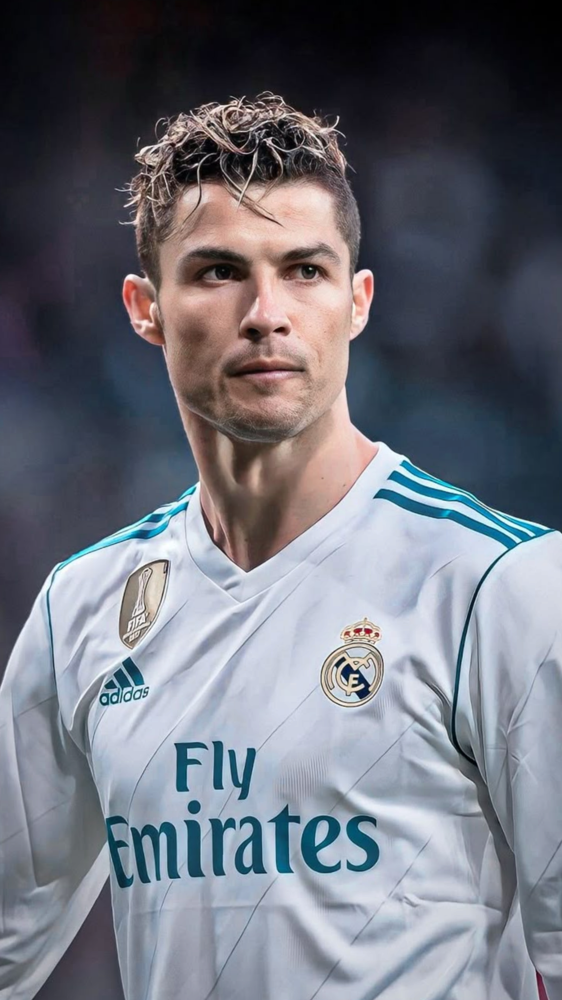

“El talento sin trabajo no sirve de nada.”
Cristiano Ronaldo dos Santos Aveiro nació el 5 de febrero de 1985 en Funchal, Madeira (Portugal). Desde niño mostró una gran pasión por el fútbol y una determinación única para triunfar. Inició su carrera en el Sporting de Lisboa, luego pasó al Manchester United, donde empezó a brillar a nivel mundial.
En el Real Madrid se convirtió en una leyenda, ganando múltiples títulos y rompiendo récords históricos. Más tarde jugó en la Juventus y actualmente forma parte del Al-Nassr en Arabia Saudita.
Cristiano es conocido por su disciplina, mentalidad ganadora y hábitos saludables. Es el primer jugador en marcar en cinco Copas del Mundo y ha donado millones a causas humanitarias. Fuera del campo, inspira a millones con su trabajo, esfuerzo y pasión por mejorar cada día.